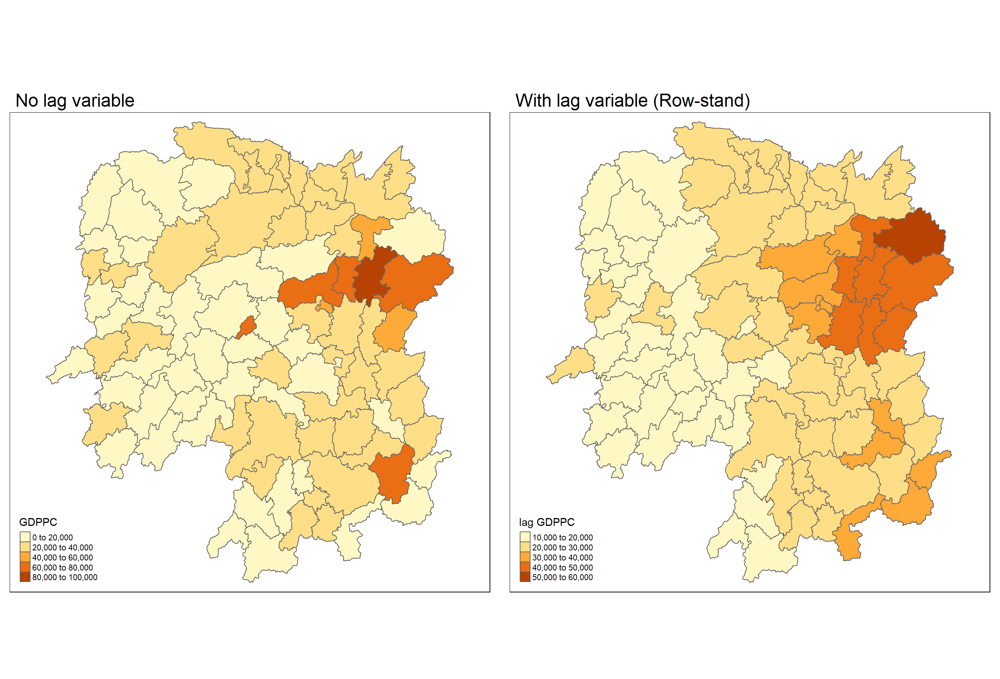

Hands-on Exercise 2.1: Spatial Weights and Applications
8.1 Overview
In this hands-on exercise, we will learn how to compute spatial weights using R. By the end to this hands-on exercise, we will be able to:
import geospatial data using appropriate function(s) of sf package,
import csv file using appropriate function of readr package,
perform relational join using appropriate join function of dplyr package,
compute spatial weights using appropriate functions of spdep package, and
calculate spatially lagged variables using appropriate functions of spdep package.
8.2 The Study Area and Data
Two data sets will be used in this hands-on exercise, they are:
Hunan county boundary layer. This is a geospatial data set in ESRI shapefile format.
Hunan_2012.csv: This csv file (aspatial) contains selected Hunan’s local development indicators in 2012.
8.2.1 Getting Started
8.3 Getting the Data Into R Environment
8.3.1 Import shapefile into r environment
The code chunk below uses st_read() of sf package to import Hunan shapefile into R. The imported shapefile will be simple features Object of sf.
Reading layer `Hunan' from data source
`C:\yixin-neo\ISSS624_AGA\Hands-on_Ex2\data\geospatial' using driver `ESRI Shapefile'
Simple feature collection with 88 features and 7 fields
Geometry type: POLYGON
Dimension: XY
Bounding box: xmin: 108.7831 ymin: 24.6342 xmax: 114.2544 ymax: 30.12812
Geodetic CRS: WGS 84[1] "sf" "data.frame"hunan is in WSG84 coordinate system.
| NAME_2 | ID_3 | NAME_3 | ENGTYPE_3 | Shape_Leng | Shape_Area | County | geometry |
|---|---|---|---|---|---|---|---|
| Changde | 21098 | Anxiang | County | 1.869074 | 0.1005619 | Anxiang | POLYGON ((112.0625 29.75523… |
| Changde | 21100 | Hanshou | County | 2.360691 | 0.1997875 | Hanshou | POLYGON ((112.2288 29.11684… |
| Changde | 21101 | Jinshi | County City | 1.425620 | 0.0530241 | Jinshi | POLYGON ((111.8927 29.6013,… |
8.3.2 Import csv file into r environment
Next, we will import Hunan_2012.csv into R by using read_csv() of readr package. The output is R dataframe class.
| County | City | avg_wage | deposite | FAI | Gov_Rev | Gov_Exp | GDP | GDPPC | GIO | Loan | NIPCR | Bed | Emp | EmpR | EmpRT | Pri_Stu | Sec_Stu | Household | Household_R | NOIP | Pop_R | RSCG | Pop_T | Agri | Service | Disp_Inc | RORP | ROREmp |
|---|---|---|---|---|---|---|---|---|---|---|---|---|---|---|---|---|---|---|---|---|---|---|---|---|---|---|---|---|
| Anhua | Yiyang | 30544 | 10967.0 | 6831.7 | 456.72 | 2703.0 | 13225.0 | 14567 | 9276.9 | 3954.9 | 3528.3 | 2718 | 494.31 | 441.4 | 338.0 | 54.175 | 32.830 | 290.4 | 234.5 | 101 | 670.3 | 5760.6 | 910.8 | 4942.253 | 5414.5 | 12373 | 0.7359464 | 0.8929619 |
| Anren | Chenzhou | 28058 | 4598.9 | 6386.1 | 220.57 | 1454.7 | 4941.2 | 12761 | 4189.2 | 2555.3 | 3271.8 | 970 | 290.82 | 255.4 | 99.4 | 33.171 | 17.505 | 104.6 | 121.9 | 34 | 243.2 | 2386.4 | 388.7 | 2357.764 | 3814.1 | 16072 | 0.6256753 | 0.8782065 |
| Anxiang | Changde | 31935 | 5517.2 | 3541.0 | 243.64 | 1779.5 | 12482.0 | 23667 | 5108.9 | 2806.9 | 7693.7 | 1931 | 336.39 | 270.5 | 205.9 | 19.584 | 17.819 | 148.1 | 135.4 | 53 | 346.0 | 3957.9 | 528.3 | 4524.410 | 14100.0 | 16610 | 0.6549309 | 0.8041262 |
8.3.3 Performing relational join
The code chunk below will be used to update the attribute table of hunan’s SpatialPolygonsDataFrame with the attribute fields of hunan2012 dataframe. This is performed by using left_join() of dplyr package.
As the join columns are not specified, this function will assume that columns with the same names, e.g., ‘county’ in both dfs will be the join columns.
The select() will retain the columns indicated in the resulting joined df.
Note the geospatial characteristics of hunan is retained.
8.4 Visualising Regional Development Indicator
Now, we are going to prepare a basemap and a choropleth map showing the distribution of GDPPC 2012 by using qtm() of tmap package.
8.5 Computing Contiguity Spatial Weights
In this section, we will use poly2nb() of spdep package to compute contiguity weight matrices for the study area. This function builds a neighbours list based on regions with contiguous boundaries. Use this if we know that for a variable, sharing common boundary increases spatial interaction.
By default, ‘queen’ argument is set to TRUE: two polygons sharing one shared boundary point will meet contiguity condition. Returns a list of first order neighbours using the Queen criteria.
If ‘queen’ argument is set to FALSE: requires more than one shared boundary point. (but may not mean a shared boundary line)
8.5.1 Computing (QUEEN) contiguity based neighbours
The code chunk below is used to compute Queen contiguity weight matrix.
Neighbour list object:
Number of regions: 88
Number of nonzero links: 448
Percentage nonzero weights: 5.785124
Average number of links: 5.090909
Link number distribution:
1 2 3 4 5 6 7 8 9 11
2 2 12 16 24 14 11 4 2 1
2 least connected regions:
30 65 with 1 link
1 most connected region:
85 with 11 linksThe summary report above shows that there are 88 area units in Hunan. The most connected area unit has 11 neighbours. There are two area units with only one heighbours.
wm_q (weights matrix queen) class: ‘nb’
A quick peak at wm_q
For each polygon in our polygon object, wm_q lists all neighboring polygons. For example, to see the neighbors for the first polygon in the object, type:
Polygon 1 has 5 neighbors. The numbers represent the polygon IDs as stored in hunan SpatialPolygonsDataFrame class.
We can retrive the county name of Polygon ID=1 by using the code chunk below:
Polygon ID=1 is Anxiang county.
To reveal the county names of the five neighboring polygons, the code chunk will be used:
The printed output above shows that the GDPPC of the five nearest neighbours based on Queen’s method are 20981, 34592, 24473, 21311 and 22879 respectively.
To display the complete weight matrix, use str()
List of 88
$ : int [1:5] 2 3 4 57 85
$ : int [1:5] 1 57 58 78 85
$ : int [1:4] 1 4 5 85
$ : int [1:4] 1 3 5 6
$ : int [1:4] 3 4 6 85
$ : int [1:5] 4 5 69 75 85
$ : int [1:4] 67 71 74 84
$ : int [1:7] 9 46 47 56 78 80 86
$ : int [1:6] 8 66 68 78 84 86
$ : int [1:8] 16 17 19 20 22 70 72 73
$ : int [1:3] 14 17 72
$ : int [1:5] 13 60 61 63 83
$ : int [1:4] 12 15 60 83
$ : int [1:3] 11 15 17
$ : int [1:4] 13 14 17 83
$ : int [1:5] 10 17 22 72 83
$ : int [1:7] 10 11 14 15 16 72 83
$ : int [1:5] 20 22 23 77 83
$ : int [1:6] 10 20 21 73 74 86
$ : int [1:7] 10 18 19 21 22 23 82
$ : int [1:5] 19 20 35 82 86
$ : int [1:5] 10 16 18 20 83
$ : int [1:7] 18 20 38 41 77 79 82
$ : int [1:5] 25 28 31 32 54
$ : int [1:5] 24 28 31 33 81
$ : int [1:4] 27 33 42 81
$ : int [1:3] 26 29 42
$ : int [1:5] 24 25 33 49 54
$ : int [1:3] 27 37 42
$ : int 33
$ : int [1:8] 24 25 32 36 39 40 56 81
$ : int [1:8] 24 31 50 54 55 56 75 85
$ : int [1:5] 25 26 28 30 81
$ : int [1:3] 36 45 80
$ : int [1:6] 21 41 47 80 82 86
$ : int [1:6] 31 34 40 45 56 80
$ : int [1:4] 29 42 43 44
$ : int [1:4] 23 44 77 79
$ : int [1:5] 31 40 42 43 81
$ : int [1:6] 31 36 39 43 45 79
$ : int [1:6] 23 35 45 79 80 82
$ : int [1:7] 26 27 29 37 39 43 81
$ : int [1:6] 37 39 40 42 44 79
$ : int [1:4] 37 38 43 79
$ : int [1:6] 34 36 40 41 79 80
$ : int [1:3] 8 47 86
$ : int [1:5] 8 35 46 80 86
$ : int [1:5] 50 51 52 53 55
$ : int [1:4] 28 51 52 54
$ : int [1:5] 32 48 52 54 55
$ : int [1:3] 48 49 52
$ : int [1:5] 48 49 50 51 54
$ : int [1:3] 48 55 75
$ : int [1:6] 24 28 32 49 50 52
$ : int [1:5] 32 48 50 53 75
$ : int [1:7] 8 31 32 36 78 80 85
$ : int [1:6] 1 2 58 64 76 85
$ : int [1:5] 2 57 68 76 78
$ : int [1:4] 60 61 87 88
$ : int [1:4] 12 13 59 61
$ : int [1:7] 12 59 60 62 63 77 87
$ : int [1:3] 61 77 87
$ : int [1:4] 12 61 77 83
$ : int [1:2] 57 76
$ : int 76
$ : int [1:5] 9 67 68 76 84
$ : int [1:4] 7 66 76 84
$ : int [1:5] 9 58 66 76 78
$ : int [1:3] 6 75 85
$ : int [1:3] 10 72 73
$ : int [1:3] 7 73 74
$ : int [1:5] 10 11 16 17 70
$ : int [1:5] 10 19 70 71 74
$ : int [1:6] 7 19 71 73 84 86
$ : int [1:6] 6 32 53 55 69 85
$ : int [1:7] 57 58 64 65 66 67 68
$ : int [1:7] 18 23 38 61 62 63 83
$ : int [1:7] 2 8 9 56 58 68 85
$ : int [1:7] 23 38 40 41 43 44 45
$ : int [1:8] 8 34 35 36 41 45 47 56
$ : int [1:6] 25 26 31 33 39 42
$ : int [1:5] 20 21 23 35 41
$ : int [1:9] 12 13 15 16 17 18 22 63 77
$ : int [1:6] 7 9 66 67 74 86
$ : int [1:11] 1 2 3 5 6 32 56 57 69 75 ...
$ : int [1:9] 8 9 19 21 35 46 47 74 84
$ : int [1:4] 59 61 62 88
$ : int [1:2] 59 87
- attr(*, "class")= chr "nb"
- attr(*, "region.id")= chr [1:88] "1" "2" "3" "4" ...
- attr(*, "call")= language poly2nb(pl = hunan, queen = TRUE)
- attr(*, "type")= chr "queen"
- attr(*, "sym")= logi TRUE8.5.2 Creating (ROOK) contiguity based neighbours
The code chunk below is used to compute Rook contiguity weight matrix.
Neighbour list object:
Number of regions: 88
Number of nonzero links: 440
Percentage nonzero weights: 5.681818
Average number of links: 5
Link number distribution:
1 2 3 4 5 6 7 8 9 10
2 2 12 20 21 14 11 3 2 1
2 least connected regions:
30 65 with 1 link
1 most connected region:
85 with 10 linksThe summary report above shows that there are 88 area units in Hunan. The most connect area unit has 10 neighbours. There are two area units with only one heighbours.
8.5.3 Visualising contiguity weights (find centroid coords first)
A connectivity graph takes a point and displays a line to each neighbouring point.
- need a point in polygon via polygon centroids (its lat & long) <- calculate using the sf package first
To obtain coordinates in a separate data frame
input vector is the geometry column of us.bound (in
hunan), an sf object <- a polygonUsing hunan$geometry[[1]]: The input vector of the FIRST POLYGON looks like POLYGON ((112.0625 29.75523, 112.069 29.74544, 112.0707 29.7415, 112.0716 29.73667, …. , 112.0625 29.75523).
To find the centroid (CG) of one polygon, use the
st_centroid()function, which is a formula shorthand for a small anonymous function (lambda function). It takes an argument represented by.x.st_centroid(.x)[[1]]extracts the X-coordinate (longitude) of the centroid whilest_centroid(.x)[[2]]extracts the Y-coords.
map_dbl(...) is a function from the purrr package that applies a function to each element of a list or vector and returns the results as a double vector. In this case, the function being applied is the expression following ~. Example of how this function is used in a simple way:
# Example list of vectors
list_of_vectors <- list(a = c(1, 2, 3), b = c(4, 5, 6), c = c(7, 8, 9))
# Applying a function to calculate the sum of each vector
map_dbl(list_of_vectors, ~ sum(.x)) a b c
6 15 24 After finding centroid, to access longitude values
double bracket notation [[ ]] and 1
[1] 112.1531 112.0372 111.8917 111.7031 111.6138 111.0341 113.7065 112.3460 [9] 112.8169 113.3534 113.8942 112.4006 112.5542 113.6636 112.9206 113.1883 [17] 113.4521 112.4209 113.0152 112.6350 112.7087 112.9095 111.9522 110.2606 [25] 110.0921 109.7985 109.5765 109.7211 109.7339 109.1537 110.6442 110.5916 [33] 109.5984 111.4783 112.1745 111.2315 110.3149 111.3248 110.5859 110.9593 [41] 111.8296 110.1926 110.7334 110.9123 111.4599 112.5268 112.3406 109.5602 [49] 109.5071 109.9954 109.4273 109.7587 109.5044 109.9899 109.9664 111.3785 [57] 112.4350 112.5558 111.7379 112.1831 111.9743 111.7009 112.2196 112.6472 [65] 113.5102 113.1172 113.7089 112.7963 110.9276 113.6420 113.4577 113.8404 [73] 113.4758 113.1428 110.3017 113.1957 111.7410 112.1831 111.3390 111.8208 [81] 110.0753 112.3965 112.7683 113.1679 111.4495 112.7956 111.5896 111.2393
To access the latitude value
double bracket notation [[ ]] and 2
With both longitude and latitude, use cbind() to combine both in the same object,
longitude latitude
[1,] 112.1531 29.44362
[2,] 112.0372 28.86489
[3,] 111.8917 29.47107
[4,] 111.7031 29.74499
[5,] 111.6138 29.49258
[6,] 111.0341 29.798638.5.3.1 Plotting Queen contiguity based neighbours map
wm_ q is weight matrix using queen method (88 rows of list of neighbours)
coords is an array of x,y coordinates of centroids for each of the 88 counties
plot(hunan$geometry, border="lightgrey", main="Queen's contiguity")
plot(wm_q, coords, pch = 19, cex = 0.6, add = TRUE, col= "red")Use the plot() function
The shape of the markers: The plot markers are by default small, empty circles. These are also known as plot characters - denoted by pch. Pch values 0 to 25 are valid and give several different symbols on the graph. Pch 0 is for a square, 1 is for a circle, 3 is for a triangle, 4 is for a cross and so on.
Size of the plot markers: The cex parameter can be set to 0.5 if we want the markers to be 50% smaller and 1.5 if wewant them to be 50% larger.
Color of the plot markers: These colors can be selected from a list provided by R under the
colors()function.
8.5.3.2 Plotting Rook contiguity based neighbours map

8.5.3.3 Plotting both Queen and Rook contiguity based neighbours maps side-by-side
par(mfrow = c(1, 2)) arranges subsequent plots in a grid with one row and two columns
par(mfrow=c(1,2))
plot(hunan$geometry, border="lightgrey", main="Queen's contiguity")
plot(wm_q, coords, pch = 19, cex = 0.6, add = TRUE, col= "red", main="Queen Contiguity")
plot(hunan$geometry, border="lightgrey",main="Rook's contiguity")
plot(wm_r, coords, pch = 19, cex = 0.6, add = TRUE, col = "blue", main="Rook Contiguity")8.6 Computing distance based neighbours
In this section, we will derive distance-based weight matrices by using dnearneigh() of spdep package.
dnearneigh(x, d1, d2, row.names = NULL, longlat = NULL, bounds=c(“GE”, “LE”),
use_kd_tree=TRUE, symtest=FALSE, use_s2=packageVersion(“s2”) > “1.0.7”, k=200,
dwithin=TRUE)identifies neighbours using distance band with lower d1= and upper d2= bounds controlled by the
bounds=argumentIf unprojected coordinates are used (WSG84 geographic) and either specified in the coordinates object x or with x as a two column matrix and longlat=TRUE, great circle distances in km will be calculated assuming the WGS84 reference ellipsoid.
8.6.1 Determine the cut-off distance
Firstly, we need to determine the upper limit for distance band by using the steps below:
Return a matrix with the indices of points belonging to the set of the k nearest neighbours of each other by using knearneigh() of spdep. Class: ‘knn’. Output: NN of poly1 = poly3, NN of poly2 = poly 78 etc…
List of 5 $ nn : int [1:88, 1] 3 78 1 5 4 69 67 46 84 70 ... $ np : int 88 $ k : num 1 $ dimension: int 2 $ x : num [1:88, 1:2] 112 112 112 112 112 ... ..- attr(*, "dimnames")=List of 2 .. ..$ : NULL .. ..$ : chr [1:2] "longitude" "latitude" - attr(*, "class")= chr "knn" - attr(*, "call")= language knearneigh(x = coords, k = 1)Convert the matrix knn object returned by knearneigh() into a neighbours list with a list of integer vectors containing neighbour region number ids by using knn2nb(). Class: nb
Return a list of the length (the distance to one’s nearest neighbour) of neighbour relationship edges by using nbdists() of spdep. The function returns in the units of the coordinates if the coordinates are projected, in km if in WSG84. Class: ‘nbdist’
Remove the list structure of the returned object by using unlist(). Class of k1dists: numeric.
Output: 25.53398 43.03114 25.53398 29.28480 29.28480 45.98097 58.52704 28.95985 34.45062 37.99885 44.49442 33.48816 35.98123
The summary report shows that the largest first nearest neighbour distance is 61.79. So using this as the upper threshold (62km) will help to ensure that all units (polygons) will have at least one neighbour.
8.6.2 Computing fixed distance weight matrix
(Earlier, we had used poly2nb(hunan, queen=TRUE/FALSE) to define neighbours using Queen or Rook method, resulting in wm_q and wm_r.)
(We also have k1 of ‘nb’ class where each polygon has 1 nb. Additionally, we used summary(unlist(nbdists())) to calculate the distance between furthest neighbours.)
Now, to define neighbours using a distance threshold, we use the dnearneigh() ,
- longlat argument: TRUE if point coordinates are geographical longitude-latitude decimal degrees (WSG84)
- some polygons have more than 1 nb, but all polygons have at least 1 nb here due to distance threshold.
Neighbour list object:
Number of regions: 88
Number of nonzero links: 324
Percentage nonzero weights: 4.183884
Average number of links: 3.681818 Average number of links is calculated by dividing the total number of links by the number of regions. On average, each region has approximately 3.68 neighboring regions. Class of wm_d62: ‘nb’
Next, we will use str() to display the content of wm_d62 weight matrix.
List of 88
$ : int [1:5] 3 4 5 57 64
$ : int [1:4] 57 58 78 85
$ : int [1:4] 1 4 5 57
$ : int [1:3] 1 3 5
$ : int [1:4] 1 3 4 85
$ : int 69
$ : int [1:2] 67 84
$ : int [1:4] 9 46 47 78
$ : int [1:4] 8 46 68 84
$ : int [1:4] 16 22 70 72
$ : int [1:3] 14 17 72
$ : int [1:5] 13 60 61 63 83
$ : int [1:4] 12 15 60 83
$ : int [1:2] 11 17
$ : int 13
$ : int [1:4] 10 17 22 83
$ : int [1:3] 11 14 16
$ : int [1:3] 20 22 63
$ : int [1:5] 20 21 73 74 82
$ : int [1:5] 18 19 21 22 82
$ : int [1:6] 19 20 35 74 82 86
$ : int [1:4] 10 16 18 20
$ : int [1:3] 41 77 82
$ : int [1:4] 25 28 31 54
$ : int [1:4] 24 28 33 81
$ : int [1:4] 27 33 42 81
$ : int [1:2] 26 29
$ : int [1:6] 24 25 33 49 52 54
$ : int [1:2] 27 37
$ : int 33
$ : int [1:2] 24 36
$ : int 50
$ : int [1:5] 25 26 28 30 81
$ : int [1:3] 36 45 80
$ : int [1:6] 21 41 46 47 80 82
$ : int [1:5] 31 34 45 56 80
$ : int [1:2] 29 42
$ : int [1:3] 44 77 79
$ : int [1:4] 40 42 43 81
$ : int [1:3] 39 45 79
$ : int [1:5] 23 35 45 79 82
$ : int [1:5] 26 37 39 43 81
$ : int [1:3] 39 42 44
$ : int [1:2] 38 43
$ : int [1:6] 34 36 40 41 79 80
$ : int [1:5] 8 9 35 47 86
$ : int [1:5] 8 35 46 80 86
$ : int [1:5] 50 51 52 53 55
$ : int [1:4] 28 51 52 54
$ : int [1:6] 32 48 51 52 54 55
$ : int [1:4] 48 49 50 52
$ : int [1:6] 28 48 49 50 51 54
$ : int [1:2] 48 55
$ : int [1:5] 24 28 49 50 52
$ : int [1:4] 48 50 53 75
$ : int 36
$ : int [1:5] 1 2 3 58 64
$ : int [1:5] 2 57 64 66 68
$ : int [1:3] 60 87 88
$ : int [1:4] 12 13 59 61
$ : int [1:5] 12 60 62 63 87
$ : int [1:4] 61 63 77 87
$ : int [1:5] 12 18 61 62 83
$ : int [1:4] 1 57 58 76
$ : int 76
$ : int [1:5] 58 67 68 76 84
$ : int [1:2] 7 66
$ : int [1:4] 9 58 66 84
$ : int [1:2] 6 75
$ : int [1:3] 10 72 73
$ : int [1:2] 73 74
$ : int [1:3] 10 11 70
$ : int [1:4] 19 70 71 74
$ : int [1:5] 19 21 71 73 86
$ : int [1:2] 55 69
$ : int [1:3] 64 65 66
$ : int [1:3] 23 38 62
$ : int [1:2] 2 8
$ : int [1:4] 38 40 41 45
$ : int [1:5] 34 35 36 45 47
$ : int [1:5] 25 26 33 39 42
$ : int [1:6] 19 20 21 23 35 41
$ : int [1:4] 12 13 16 63
$ : int [1:4] 7 9 66 68
$ : int [1:2] 2 5
$ : int [1:4] 21 46 47 74
$ : int [1:4] 59 61 62 88
$ : int [1:2] 59 87
- attr(*, "class")= chr "nb"
- attr(*, "region.id")= chr [1:88] "1" "2" "3" "4" ...
- attr(*, "call")= language dnearneigh(x = coords, d1 = 0, d2 = 62, longlat = TRUE)
- attr(*, "dnn")= num [1:2] 0 62
- attr(*, "bounds")= chr [1:2] "GE" "LE"
- attr(*, "nbtype")= chr "distance"
- attr(*, "sym")= logi TRUEAnother way to display the structure of the weight matrix is to combine table() and card() of spdep.
The column headers “1” means the count of counties that have 1 neighbor within the specified distance of 62km, “2” means the count of counties that have 2 neighbors, and so on.
1 2 3 4 5 6
Anhua 1 0 0 0 0 0
Anren 0 0 0 1 0 0
Anxiang 0 0 0 0 1 0
Baojing 0 0 0 0 1 0
Chaling 0 0 1 0 0 0
Changning 0 0 1 0 0 0
Changsha 0 0 0 1 0 0
Chengbu 0 1 0 0 0 0
Chenxi 0 0 0 1 0 0
Cili 0 1 0 0 0 0
Dao 0 0 0 1 0 0
Dongan 0 0 1 0 0 0
Dongkou 0 0 0 1 0 0
Fenghuang 0 0 0 1 0 0
Guidong 0 0 1 0 0 0
Guiyang 0 0 0 1 0 0
Guzhang 0 0 0 0 0 1
Hanshou 0 0 0 1 0 0
Hengdong 0 0 0 0 1 0
Hengnan 0 0 0 0 1 0
Hengshan 0 0 0 0 0 1
Hengyang 0 0 0 0 0 1
Hongjiang 0 0 0 0 1 0
Huarong 0 0 0 1 0 0
Huayuan 0 0 0 1 0 0
Huitong 0 0 0 1 0 0
Jiahe 0 0 0 0 1 0
Jianghua 0 0 1 0 0 0
Jiangyong 0 1 0 0 0 0
Jingzhou 0 1 0 0 0 0
Jinshi 0 0 0 1 0 0
Jishou 0 0 0 0 0 1
Lanshan 0 0 0 1 0 0
Leiyang 0 0 0 1 0 0
Lengshuijiang 0 0 1 0 0 0
Li 0 0 1 0 0 0
Lianyuan 0 0 0 0 1 0
Liling 0 1 0 0 0 0
Linli 0 0 0 1 0 0
Linwu 0 0 0 1 0 0
Linxiang 1 0 0 0 0 0
Liuyang 0 1 0 0 0 0
Longhui 0 0 1 0 0 0
Longshan 0 1 0 0 0 0
Luxi 0 0 0 0 1 0
Mayang 0 0 0 0 0 1
Miluo 0 0 0 0 1 0
Nan 0 0 0 0 1 0
Ningxiang 0 0 0 1 0 0
Ningyuan 0 0 0 0 1 0
Pingjiang 0 1 0 0 0 0
Qidong 0 0 1 0 0 0
Qiyang 0 0 1 0 0 0
Rucheng 0 1 0 0 0 0
Sangzhi 0 1 0 0 0 0
Shaodong 0 0 0 0 1 0
Shaoshan 0 0 0 0 1 0
Shaoyang 0 0 0 1 0 0
Shimen 1 0 0 0 0 0
Shuangfeng 0 0 0 0 0 1
Shuangpai 0 0 0 1 0 0
Suining 0 0 0 0 1 0
Taojiang 0 1 0 0 0 0
Taoyuan 0 1 0 0 0 0
Tongdao 0 1 0 0 0 0
Wangcheng 0 0 0 1 0 0
Wugang 0 0 1 0 0 0
Xiangtan 0 0 0 1 0 0
Xiangxiang 0 0 0 0 1 0
Xiangyin 0 0 0 1 0 0
Xinhua 0 0 0 0 1 0
Xinhuang 1 0 0 0 0 0
Xinning 0 1 0 0 0 0
Xinshao 0 0 0 0 0 1
Xintian 0 0 0 0 1 0
Xupu 0 1 0 0 0 0
Yanling 0 0 1 0 0 0
Yizhang 1 0 0 0 0 0
Yongshun 0 0 0 1 0 0
Yongxing 0 0 0 1 0 0
You 0 0 0 1 0 0
Yuanjiang 0 0 0 0 1 0
Yuanling 1 0 0 0 0 0
Yueyang 0 0 1 0 0 0
Zhijiang 0 0 0 0 1 0
Zhongfang 0 0 0 1 0 0
Zhuzhou 0 0 0 0 1 0
Zixing 0 0 1 0 0 0TO find the number of connected components (aka see if there are any spatial units / regions without a neighbour)
In this connected component, there are 88 elements (spatial units)
8.6.2.1 Plotting fixed distance weight matrix
Next, we will plot the distance weight matrix by using the code chunk below.
wm_d62 is the fixed distance weight matrix,
coords refers to long, lat coordinates for CG of each polygon
k1 is the list of integer ID of the polygon which is the nearest neighbour to me. The topmost layer of the plot colours the nearest neighbour edge to red colour.
plot(hunan$geometry, border="lightgrey")
plot(wm_d62, coords, add=TRUE)
plot(k1, coords, add=TRUE, col="red", length=0.08) The red lines shows the links of 1st nearest neighbours and the black lines show the lines of neighbours within the cut-off distance of 62km.
To plot red and black side by side,
8.6.3 Computing adaptive distance weight matrix
Use this method if the dataset is highly skewed to fix the # of nbs.
Earlier, we used k1 <- knn2nb(knearneigh(coords, k=1)) and wm_d62 <- dnearneigh(coords, 0, 62, longlat=TRUE ) to plot maps of nearest nb and nbs within 62km range.
One of the characteristics of fixed distance weight matrix is that more densely settled areas (usually the urban areas) tend to have more neighbours and the less densely settled areas (usually the rural counties) tend to have lesser neighbours. Having many neighbours smoothes the neighbour relationship across more neighbours.
It is possible to control the numbers of neighbours directly using k-nearest neighbours, either accepting asymmetric neighbours or imposing symmetry as shown in the code chunk below. class of knn6: ‘nb’
Neighbour list object:
Number of regions: 88
Number of nonzero links: 528
Percentage nonzero weights: 6.818182
Average number of links: 6
Non-symmetric neighbours listSimilarly, we can display the content of the matrix by using str(). Note that each spatial units has exactly 6 neighbours.
List of 88
$ : int [1:6] 2 3 4 5 57 64
$ : int [1:6] 1 3 57 58 78 85
$ : int [1:6] 1 2 4 5 57 85
$ : int [1:6] 1 3 5 6 69 85
$ : int [1:6] 1 3 4 6 69 85
$ : int [1:6] 3 4 5 69 75 85
$ : int [1:6] 9 66 67 71 74 84
$ : int [1:6] 9 46 47 78 80 86
$ : int [1:6] 8 46 66 68 84 86
$ : int [1:6] 16 19 22 70 72 73
$ : int [1:6] 10 14 16 17 70 72
$ : int [1:6] 13 15 60 61 63 83
$ : int [1:6] 12 15 60 61 63 83
$ : int [1:6] 11 15 16 17 72 83
$ : int [1:6] 12 13 14 17 60 83
$ : int [1:6] 10 11 17 22 72 83
$ : int [1:6] 10 11 14 16 72 83
$ : int [1:6] 20 22 23 63 77 83
$ : int [1:6] 10 20 21 73 74 82
$ : int [1:6] 18 19 21 22 23 82
$ : int [1:6] 19 20 35 74 82 86
$ : int [1:6] 10 16 18 19 20 83
$ : int [1:6] 18 20 41 77 79 82
$ : int [1:6] 25 28 31 52 54 81
$ : int [1:6] 24 28 31 33 54 81
$ : int [1:6] 25 27 29 33 42 81
$ : int [1:6] 26 29 30 37 42 81
$ : int [1:6] 24 25 33 49 52 54
$ : int [1:6] 26 27 37 42 43 81
$ : int [1:6] 26 27 28 33 49 81
$ : int [1:6] 24 25 36 39 40 54
$ : int [1:6] 24 31 50 54 55 56
$ : int [1:6] 25 26 28 30 49 81
$ : int [1:6] 36 40 41 45 56 80
$ : int [1:6] 21 41 46 47 80 82
$ : int [1:6] 31 34 40 45 56 80
$ : int [1:6] 26 27 29 42 43 44
$ : int [1:6] 23 43 44 62 77 79
$ : int [1:6] 25 40 42 43 44 81
$ : int [1:6] 31 36 39 43 45 79
$ : int [1:6] 23 35 45 79 80 82
$ : int [1:6] 26 27 37 39 43 81
$ : int [1:6] 37 39 40 42 44 79
$ : int [1:6] 37 38 39 42 43 79
$ : int [1:6] 34 36 40 41 79 80
$ : int [1:6] 8 9 35 47 78 86
$ : int [1:6] 8 21 35 46 80 86
$ : int [1:6] 49 50 51 52 53 55
$ : int [1:6] 28 33 48 51 52 54
$ : int [1:6] 32 48 51 52 54 55
$ : int [1:6] 28 48 49 50 52 54
$ : int [1:6] 28 48 49 50 51 54
$ : int [1:6] 48 50 51 52 55 75
$ : int [1:6] 24 28 49 50 51 52
$ : int [1:6] 32 48 50 52 53 75
$ : int [1:6] 32 34 36 78 80 85
$ : int [1:6] 1 2 3 58 64 68
$ : int [1:6] 2 57 64 66 68 78
$ : int [1:6] 12 13 60 61 87 88
$ : int [1:6] 12 13 59 61 63 87
$ : int [1:6] 12 13 60 62 63 87
$ : int [1:6] 12 38 61 63 77 87
$ : int [1:6] 12 18 60 61 62 83
$ : int [1:6] 1 3 57 58 68 76
$ : int [1:6] 58 64 66 67 68 76
$ : int [1:6] 9 58 67 68 76 84
$ : int [1:6] 7 65 66 68 76 84
$ : int [1:6] 9 57 58 66 78 84
$ : int [1:6] 4 5 6 32 75 85
$ : int [1:6] 10 16 19 22 72 73
$ : int [1:6] 7 19 73 74 84 86
$ : int [1:6] 10 11 14 16 17 70
$ : int [1:6] 10 19 21 70 71 74
$ : int [1:6] 19 21 71 73 84 86
$ : int [1:6] 6 32 50 53 55 69
$ : int [1:6] 58 64 65 66 67 68
$ : int [1:6] 18 23 38 61 62 63
$ : int [1:6] 2 8 9 46 58 68
$ : int [1:6] 38 40 41 43 44 45
$ : int [1:6] 34 35 36 41 45 47
$ : int [1:6] 25 26 28 33 39 42
$ : int [1:6] 19 20 21 23 35 41
$ : int [1:6] 12 13 15 16 22 63
$ : int [1:6] 7 9 66 68 71 74
$ : int [1:6] 2 3 4 5 56 69
$ : int [1:6] 8 9 21 46 47 74
$ : int [1:6] 59 60 61 62 63 88
$ : int [1:6] 59 60 61 62 63 87
- attr(*, "region.id")= chr [1:88] "1" "2" "3" "4" ...
- attr(*, "call")= language knearneigh(x = coords, k = 6)
- attr(*, "sym")= logi FALSE
- attr(*, "type")= chr "knn"
- attr(*, "knn-k")= num 6
- attr(*, "class")= chr "nb"8.6.3.1 Plotting distance based neighbours
8.7 Weights based on Inverse Distance Method
In this section, we will learn how to derive a spatial weight matrix based on Inversed Distance method. This will assign greater weightage to closer polygons, use this if we know that closer proximity will result in more spatial interaction.
Earlier, we applied nbdists() nbdists(knn2nb(knearneigh(coords, k=1)), coords, longlat = TRUE) to compute the distance of one’s nearest neighbour.
First, we will compute the distances between areas (defined using Queen contiguity method) by using nbdists() of spdep. Class of dist: nbdist
[[1]]
[1] 65.12941 25.53398 54.91802 35.61352 87.32760
[[2]]
[1] 65.12941 56.67944 51.92312 43.03114 58.16151
[[3]]
[1] 25.53398 35.43536 27.05778 71.64530Now compute the inverse distances for all polygons to their neighbours. Class of ids: matrix of list
[[1]]
[1] 0.01535405 0.03916350 0.01820896 0.02807922 0.01145113
[[2]]
[1] 0.01535405 0.01764308 0.01925924 0.02323898 0.01719350
[[3]]
[1] 0.03916350 0.02822040 0.03695795 0.013957658.7.1 Row-standardised weights matrix
nb2listw(neighbours, glist=NULL, style="W", zero.policy=NULL)
Arguments
neighbours |
an object of class nb |
|---|---|
glist |
list of general weights corresponding to neighbours |
style |
style can take values “W”, “B”, “C”, “U”, “minmax” and “S” |
zero.policy |
default NULL, use global option value; if FALSE stop with error for any empty neighbour sets, if TRUE permit the weights list to be formed with zero-length weights vectors |
Details
Starting from a binary neighbours list, in which regions are either listed as neighbours or are absent (thus not in the set of neighbours for some definition), the function adds a weights list with values given by the coding scheme style chosen.
Weights to each neighboring polygon
each neighboring polygon will be assigned equal weight (style=“W”) <- row standardised. This is accomplished by assigning the fraction 1/(#ofneighbors) to each neighboring county then summing the weighted income values
drawback of this method is that polygon along the edge will base their lagged values on fewer polygons, thus over estimating the true nature of spatial autocorrelation in the data. Next time can consider other more robust options are available, notably style=“B” <- basic binary coding
The zero.policy=TRUE option allows for lists of non-neighbors. This should be used with caution since the user may not be aware of missing neighbors in their dataset however, a zero.policy of FALSE would return an error. Class of rsmq_q = ‘listw’ and ‘nb’
# wm_q is a matrix containing nb indexes
rswm_q <- nb2listw(wm_q, style = 'W', zero.policy = TRUE)
rswm_qCharacteristics of weights list object:
Neighbour list object:
Number of regions: 88
Number of nonzero links: 448
Percentage nonzero weights: 5.785124
Average number of links: 5.090909
Weights style: W
Weights constants summary:
n nn S0 S1 S2
W 88 7744 88 37.86334 365.9147To see the weight of the first polygon’s 5 neighbours type:
The 5 neighbours are
Explanation of above: Each neighbor is assigned a 0.125 of the total weight. This means that when R computes the average neighboring income values, each neighbor’s income will be multiplied by 0.125 before being tallied.
Using the same queen’s method, we can also derive a (row standardised ?) inverse-distance weight matrix by using the code chunk below. Recall ids contains inverse-distances to neighbours , originally from queens wm_q which is a binary matrix. Class of rswm_ids is ‘listw’ and ‘nb’. It contains 3 lists, ‘style’ of class character ,‘neighbours’ of class nb, ‘weights’ of class nb
Characteristics of weights list object:
Neighbour list object:
Number of regions: 88
Number of nonzero links: 448
Percentage nonzero weights: 5.785124
Average number of links: 5.090909
Weights style: B
Weights constants summary:
n nn S0 S1 S2
B 88 7744 8.786867 0.3776535 3.8137To see the weights of the 1st polygon; it is actually the same as ids
Min. 1st Qu. Median Mean 3rd Qu. Max.
0.008218 0.015088 0.018739 0.019614 0.022823 0.040338 Finally, a comparison of the weights for polygon 1 across three spatial weights methods:
a <- unlist(rswm_q$weights[1])
b <- unlist(nb2listw(wm_q, style = 'B', zero.policy = TRUE)$weights[1])
c <- unlist(rswm_ids$weights[1])
weights_comparison <- as.data.frame(cbind(a,b,c))
colnames(weights_comparison) <- c("row standardised", "binary", 'inverse distance')
weights_comparison row standardised binary inverse distance
1 0.2 1 0.01535405
2 0.2 1 0.03916350
3 0.2 1 0.01820896
4 0.2 1 0.02807922
5 0.2 1 0.011451138.8 Application of Spatial Weight Matrix
In this section, you will learn how to create four different spatial lagged variables, they are:
spatial lag with row-standardized weights,
spatial lag as a sum of neighbouring values,
spatial window average, and
spatial window sum.
8.8.1 Spatial lag with row-standardized weights
compute the average neighbour GDPCC values for each polygon
commonly called spatially lagged values
does not include itself
Recalled in the previous section, we retrieved the GDPPC of these five countries (neighbours of poly1 using queen method) by using the code chunk below.
In the code below, use spatial weight matrix (equal weightage of 0.2 for poly1 etc.. ) by 0.2 * 20981 + 0.2 * 34592 + 0.2 * 24473 + 0.2 * 21311 + 0.2 * 22879 = 24847.20 for poly1 “Anxiang”
22724.80 is the average GDPPC for poly2 based on equal weightage (0.2) of all its five neighbours . 24143.25 for poly3 based on equal weightage (0.25) based on four neighbours.
[1] 24847.20 22724.80 24143.25 27737.50 27270.25 21248.80 43747.00 33582.71
[9] 45651.17 32027.62 32671.00 20810.00 25711.50 30672.33 33457.75 31689.20
[17] 20269.00 23901.60 25126.17 21903.43 22718.60 25918.80 20307.00 20023.80
[25] 16576.80 18667.00 14394.67 19848.80 15516.33 20518.00 17572.00 15200.12
[33] 18413.80 14419.33 24094.50 22019.83 12923.50 14756.00 13869.80 12296.67
[41] 15775.17 14382.86 11566.33 13199.50 23412.00 39541.00 36186.60 16559.60
[49] 20772.50 19471.20 19827.33 15466.80 12925.67 18577.17 14943.00 24913.00
[57] 25093.00 24428.80 17003.00 21143.75 20435.00 17131.33 24569.75 23835.50
[65] 26360.00 47383.40 55157.75 37058.00 21546.67 23348.67 42323.67 28938.60
[73] 25880.80 47345.67 18711.33 29087.29 20748.29 35933.71 15439.71 29787.50
[81] 18145.00 21617.00 29203.89 41363.67 22259.09 44939.56 16902.00 16930.00We can append the spatially lag GDPPC values onto hunan sf data frame by using the code chunk below.
First, create lag.list that contains two individual lists, namely NAME_3 column in hunan and the lag variable. Next, transform both lists into a dataframe. Rename the column headers. Perform a left join with hunan and lag.res will automatically use NAME_3 column as the join column.
lag.list <- list(hunan$NAME_3, lag.listw(rswm_q, hunan$GDPPC))
lag.res <- as.data.frame(lag.list)
colnames(lag.res) <- c("NAME_3", "lag GDPPC")
hunan <- left_join(hunan,lag.res)
head(as_tibble(hunan),3)# A tibble: 3 × 8
NAME_2 ID_3 NAME_3 ENGTYPE_3 County GDPPC `lag GDPPC`
<chr> <int> <chr> <chr> <chr> <dbl> <dbl>
1 Changde 21098 Anxiang County Anxiang 23667 24847.
2 Changde 21100 Hanshou County Hanshou 20981 22725.
3 Changde 21101 Jinshi County City Jinshi 34592 24143.
# ℹ 1 more variable: geometry <POLYGON [°]>The following table shows the average neighboring income values (stored in the Inc.lag object) for each county.
Next, we will plot both the GDPPC and spatial lag GDPPC for comparison using the code chunk below.
gdppc <- qtm(hunan, 'GDPPC') +
tm_layout(main.title='No lag variable',
legend.height = 0.2,
legend.width=0.2)
lag_gdppc <- qtm(hunan, 'lag GDPPC') +
tm_layout(main.title='With lag variable (Row-stand)',
legend.height = 0.2,
legend.width=0.4)
tmap_arrange(gdppc, lag_gdppc, asp=1, ncol=2)
Compute lag variable using rswm_ids (inverse-distance method)
lag.list.2 <- list(hunan$NAME_3, lag.listw(rswm_ids, hunan$GDPPC))
lag.res.2 <- as.data.frame(lag.list.2)
colnames(lag.res.2) <- c("NAME_3", "lag GDPPC ID")
hunan <- left_join(hunan,lag.res.2)
head(as_tibble(hunan),3)# A tibble: 3 × 9
NAME_2 ID_3 NAME_3 ENGTYPE_3 County GDPPC `lag GDPPC` `lag GDPPC ID`
<chr> <int> <chr> <chr> <chr> <dbl> <dbl> <dbl>
1 Changde 21098 Anxiang County Anxiang 23667 24847. 2983.
2 Changde 21100 Hanshou County Hanshou 20981 22725. 2092.
3 Changde 21101 Jinshi County City Jinshi 34592 24143. 2881.
# ℹ 1 more variable: geometry <POLYGON [°]>lag_gdppc_id <- qtm(hunan, 'lag GDPPC ID') +
tm_layout(main.title='With lag variable (Inv_dist)',
legend.height = 0.2,
legend.width=0.4)
tmap_arrange(lag_gdppc, lag_gdppc_id, asp=1, ncol=2)
Theories
Summary of deriving spatial weights matrix